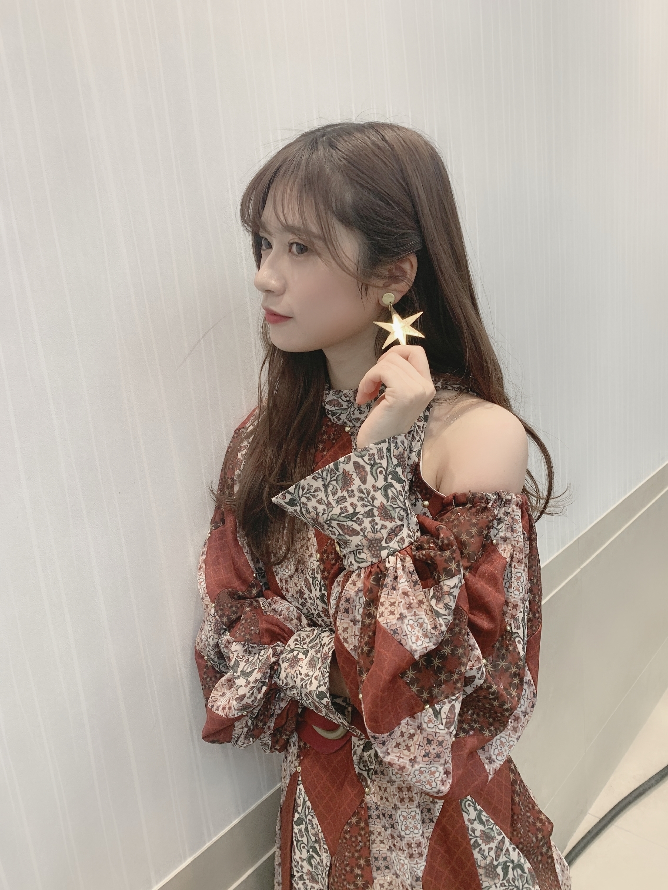
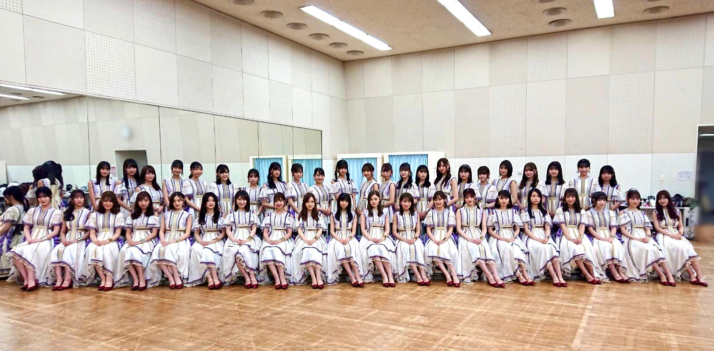

2020/0110Friワタボコリ
皆さんは年末に大掃除しましたか？
普段からこまめにしてるから大掃除しなくても変わらない私の周りですが、いつもより丁寧にお掃除できると気分がよいです。
掃除は好きな方です。
今年も、いい年になりますように。
紅白ありがとうございました！
坂道グループ皆で沢山練習しました。
内村さんもありがとうございます。
円でのフォーメーションになる際
真正面で向き合ってダンスしていたのですが
リハーサルのときなど
目が合うこともありましたが
目が合うと心から笑顔になれます。
乃木坂46
シンクロニシティは人と人との繋がり
人の心にある温かさを感じて表現する乃木坂のメンバーが昔から作り上げてきた空気感を歌やダンスで表現している曲だと思います。
それぞれのグループのカラーがあるから慣れないダンスなど
忙しい年末の時期に覚えてもらってありがとうございました。
去年も健康に過ごせました。
そして、こうして活動出来ているのはファンの皆さんや側に居てくれる方々が居るからです。
その気持ちをシンクロニシティに年末込めれました。
白石さんのシンクロニシティ大好き。☺️
白石さんの優しさが滲み出てるから
これからあと何回一緒に踊れるか歌えるかわからないけど、噛み締めたいです。
1期生は大切で大好きなお姉さん達です。
残りの時間寂しい気持ちはないと言ったら嘘になるけど、寂しさよりも楽しく明るく過ごしたいです。
今年も皆さんと支えあえる関係でいたいです。
2019ありがとうございました。☺️
今年も宜しくお願い致します！
なにとぞー！
乃木坂工事中ありがとうございました！
観てくれましたか？
電池丁度欲しかったので助かりました！
まだ、日村賞が消化できてないので、、、！
待ってます！
ロケ番組とか観るのも好きなので
やらせてもらうのも新鮮で楽しいものでした！

star

2020/01/10 18:18


コメント(317)
大好きだよー
紅白可愛かった
今日も大好きです
ずーっと応援してます～！
2020年も握手会たくさん行くからよろしくね
2020年えいえいおー！
たくさんの蘭世ちゃんが見れて嬉しかったです
体調には気をつけてこれからも頑張ってください
今年はたくさん会えるように頑張ります
大好きです
2020年も握手会たくさん行くからよろしくね
シンクロニシティ、いい曲だよね、大好き
紅白蘭世ばっか見てたよ！！！
ももんが
年末の大掃除、しっかりしました。笑
もう支えてもらってばっかりだから、今年はお互いに支え合えるように頑張りましょうね！
今年も何卒！！！
年末の音楽番組お疲れ様でした！
素晴らしいパフォーマンスに感動しました！
それに可愛い蘭世と衣装にメロメロになりました！
まいやんの卒業残念でしたね…残り少ない時間を大切に過ごしてください…
これからも頑張って下さい！応援してます。
僕は年始が大学のテストで忙しくて年末は部屋が散らかったので、今日から大掃除です。笑
今年もよろしくお願いします。
まいやんは偉大ですよね...
残された時間を楽しく過ごしたいですね。
乃木中見ましたよ！とても可愛かったです。ロケ姿の蘭世さんが見れて大変嬉しかったです。
では！
だにえる
蘭世が着るともっと可愛くなってるよ
乃木中見ましたよ！面白かったです。
そしてブログ更新待ってました
早く寺田さんに会える機会が欲しいなぁと
欲張ってしまいそうな今日この頃
沢山お話したいことがあります
年末、歌番組などお疲れ様でした
素敵な素敵な空間でした
卒業は寂しい気持ちが大半ですが
前向きな気持ちで送り出したいものですよね
改めてその方との思い出とか
色々と気持ちが溢れてきちゃいます
お写真もありがとう
Mステのこの衣装すごく素敵です…
やっぱり赤色を着ている寺田さんは
すごく素敵です…
この一年もどうか健康ですこやかな毎日を
過ごしてくださいね
2020年も何卒お願いします
今年も沢山会いに行きたいです
大好きーーーー
ゆうき(ゆっちゃん)
今年も蘭世ちゃんの活躍楽しみにしてます！
年末はそこまで大掃除と言えるものはしませんでしたね
紅白お疲れ様でした、蘭世さんの選抜曲であり、オリジナルポジションで踊ってた蘭世さんを見れてとても嬉しかったです
内村さん、欅坂さん、日向坂さんにも急ピッチで仕上げてくれて感謝感謝です
白石さんのシンクロニシティはほんと可憐で見惚れてしまいます
残りの時間楽しく送り出せればいいですね
今年も宜しくお願いしますね！微力ながら支えになれればと思ってます。
乃木中見ましたよー！電池でもほんとに嬉しそうにしてるのが何とも可愛くてたまりませんでした
日村賞ですね！きてほしいですねー
可愛いですね、とてもとても綺麗です！
いつもありがとうございます、これからもよろしくお願いします、大好きです
UY
紅白お疲れ様でした！
シンクロとても好きな曲なので紅白という舞台で見てたのはとても良かったです！！
乃木中もしっかり見させてもらいました！
とても可愛かったよー！
今年も１年何卒よろしくねー。
今年は年明けは夜勤だったので会社で迎えました、もちろん紅白からのCDTVで！
一瞬で蘭世さん見つけれました、モバメも読みました、髪色めちゃくちゃ良かったです
グレイテストまいやんを生で見れたことと、ブランコ歌ってるまいやん見れて、あぁ蘭世さんが大切にしてた曲がお姉さんに歌われるのって、オタクから見てもこんなに嬉しいんだって思いました
誰からも愛される曲ってやっぱいいですね、蘭世さんオタクとしても嬉しいです
長くなりましたが、
今年こそ握手会行きたいと思いますので、なにとぞよろしくお願い致します
では、良いお年をお過ごし下さい
さや
年末も年始もお疲れ様でした！レコ大も紅白もCDTVもたくさん蘭世みれて幸せでした！誕生日が元日だったので17歳になりました 今年も関東圏は全部行きます！
今年もたくさん感謝を伝えに行きますいつもありがとうございます大好きです
これからもついていきます！！！
今年もよろしくお願いします。
まずは昨年の紅白歌合戦、そしてCDTVお疲れさまでした。
3グループ合同&内村さんの加わったシンクロニシティ、年末ならではのお祭り感があって素敵でした。
シンクロニシティはいつ聞いても名曲だなと思いますね。
乃木坂工事中、じつに楽しそうな姿を拝見できて年明け早々幸せ気分でしたよ。今週分も楽しみです。
正直、2019年は蘭世さんを支えるというより、支えて貰うことが多かったように思います。日々のモバメやブログ、そして滑走路にどれだけ助けられたことか。
今年こそ、少しでも蘭世さんを支えられるよう微力ですが応援できればと思います。
白石さん、そしてTeam DTAR座長の井上さんをはじめ、2020年も皆さんの笑顔が絶えない1年になりますように！
僕は思い立った時にしか掃除しないので大掃除という区切りでまとめて掃除できて心も部屋も綺麗になれました
紅白歌合戦しっかりとみましたよ
あの人数でのシンクロニシティ壮大でした
他の坂道グループのみんなも内村さんもみんなで踊るシンクロニシティ
人と人の繋がりをしっかりと感じました。
次のシングルが3月ということで直接今年もよろしくお願いしますというのを伝えに行く機会は無いのでブログのコメントで失礼します
今年も何卒宜しくお願い致します。
今年も昨年以上に蘭世をきっかけに繋がれる人が沢山いると思うとワクワクしております
お体に気をつけて
ビタミンししっかりとって今年も元気にいきましょう
テレビで楽しそうな蘭世が見れるだけで私は幸せです！2020年、こちらこそなにとぞー！
らんぜ節がマイブームなので、
今年もかましちゃって下さい。
去年は沢山ありがとうございました！
蘭世さんのおかげで最高の1年にすることが出来ましたよ！
掃除はあまり好きな方ではありません…
どこから手をつけていいのか分からなくなって、やる気を失いますw
蘭世さん手伝いに来てー
紅白おつかれ様！！
リアタイは出来なかったけど、しっかり蘭世さんを見つけられたよ！！
あの時はまいやんがラストだなんて思いもしてなかったから、蘭世さんばっかり見ちゃった…
あの時に戻って、まいやんを目の片隅に見つつ蘭世さんを見るようにしたいなー
乃木中も蘭世さんがいっちゃん美しかったよ！
やっぱり蘭世さんの服装は個性が出ててすき！
今年も沢山握手会通うね！
俺も握手会用に洋服買わなきゃだ！！
今年もよろしくお願いします！！
蘭世ーーー明けましておめでとう
そして、今年もよろしくね
早く蘭世に逢いたいぞ！！
とりあえず挨拶を
またコメント書くよーーーーーーー
身体には気をつけてね
紅白の蘭世は毎年きらきら輝いてます♥︎♥︎
衣装めちゃくちゃ似合ってる
2019年ありがとう
前回の乃木中は蘭世回だったね〜
乾電池よかったよかった
私も蘭世を見習ってお掃除します
ワタボコリききながら！！
大掃除したよー
シンクロニシティめっちゃよかった
まいやんとの残りの期間もたくさん楽しんでください
紅白見たよー。
自分もシンクロニシティ好きっ。
自分は春からの新生活に備え、大掃除しましたが普段なかなかやらなかったので大変でした。
紅白歌合戦、素晴らしかったです。3坂道プラス内村さんでまた新たなシンクロニシティが見てれとても嬉しかったです。
本年も健康でいられるよう明治さんの製品を沢山飲んで色々な景色を一緒に見ていきたいです。
紅白のシンクロニシティとてもよかったです
3つの坂道+内村さん、神秘的でした‼️
1期生がまた卒業発表して悲しいです
でも新たな門出なので残りの時間を精一杯応援していきたいと思います
日村賞の全員での食事会実現できるといいですね(^_^)
早く蘭世さんとまた握手会でお話ししたいです
紅白の曲がシンクロニシティって発表されたときは、蘭世がオリジナルメンバーの楽曲だから本当に嬉しかった！
紅白もちろんリアルタイムで観ました！蘭世しっかり見つけました！感無量でした！！
シンクロニシティって乃木坂のイメージぴったりの曲だよね。就活をしてた時期にシンクロニシティがリリースされて、この曲に本当に元気をもらった記憶があります。だからすごい好きなんです。
まいやんのシンクロニシティは僕も大好きです！ダンスひとつひとつの振りに感情が込められていて、それがすごい伝わるんです。あと何回観れるかわかりませんが、一回一回を大切に観たいです。
2019年はお世話になりました！2020年はもっともっと応援させていただきます！よろしくおねがいします！！
ブログ更新ありがとう
明けましておめでとう
今年もなにとぞー！
冬やけど
寒かったり暖かかったり
風邪引きなや～
今年もよろしく！そしてずっと応援してるよー
2月のbirthday LIVE行くよー
楽しみです！
今年も活躍をたくさん見られるように頑張って下さい！！
あけましておめでとうございます！蘭世さんにとって幸せで充実した1年になりますように！今年もよろしくお願いいたします！変わらず蘭世さんを全力で応援していきます！
紅白歌合戦、去年も最後に素晴らしいそして美しいパフォーマンスをみて年越し出来て幸せでした！蘭世さんもしっかり映っていましたよ！最高でした！
乃木坂工事中もたくさん蘭世さんがみれてよかったしやっぱりバナナマンさんとの絡みはいいですね！蘭世さんがとても楽しそうだったのでこっちも嬉しかったです！
そして白石麻衣さんが卒業発表されましたね。ここまで乃木坂を支えてくれたこと本当に感謝ですし、尊敬します。残りの時間をとても濃いものにして欲しいですね！蘭世さんとまいやんのコンビ、46時間テレビの時やジコチューで行こうのときのペアなどいろいろ思い浮かびます！一日一日を大切にしていきたいですね！
今週末のがくたび、とても楽しみです！地元の三重県の知ってる高校なのでびっくりしました！三重県はどうでしたか？料理対決楽しみにしています！！
この1年も健康第一でそして何より僕も平和であって欲しいと願います。
長文すいませんでした。蘭世さん大好きぴです！
CDTVのラプンツェル風髪型とっても可愛かったよ！！！その時の衣装と髪型見たいなぁ！
いつも元気もらってます。
これからも寺田さんらしく頑張ってください
紅白お疲れ様でした！
シンクロニシティとても素敵でした！
白石さんと最後まで楽しく過ごしたいですね。
乃木中見ました！
スムージー作ってるところとか色々楽しかったです(^^)
今年もよろしくお願いします！
コメントする